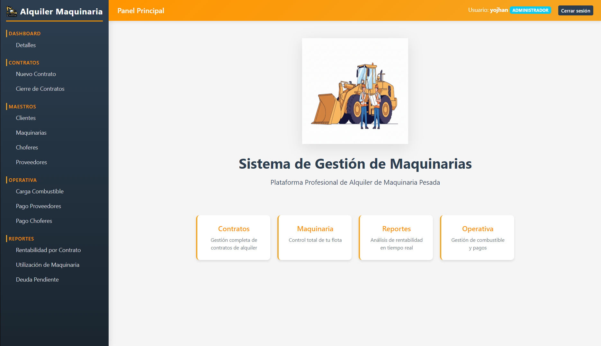
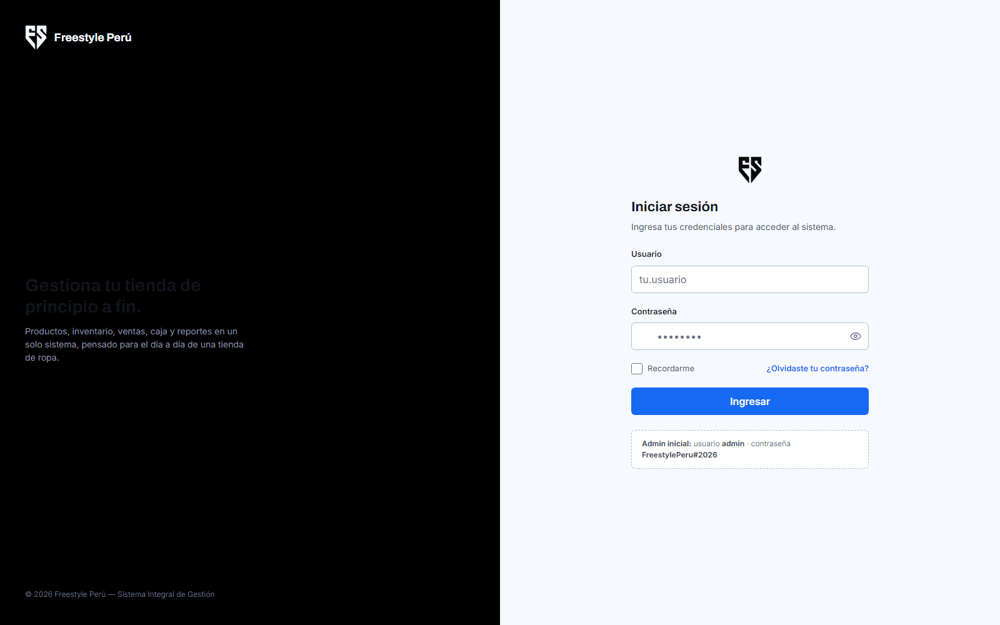
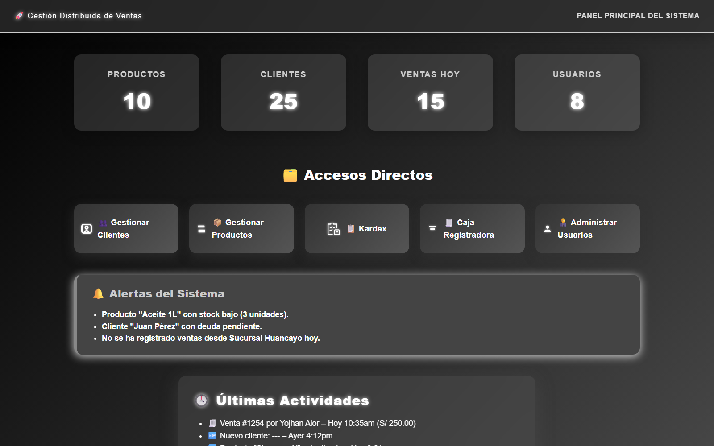

Estudiante de Ingeniería Informática
Cursando el 8vo ciclo de Ingeniería Informática, con experiencia práctica en desarrollo backend y full-stack, administración de infraestructura (Windows Server, Active Directory) y fundamentos de gestión ágil de proyectos.
Soy estudiante de 8vo ciclo de Ingeniería Informática en la UNJFSC, con experiencia desarrollando aplicaciones backend y full-stack en proyectos académicos y personales. También cuento con conocimientos en administración de infraestructura (Windows Server, Active Directory, administración de redes) y fundamentos de gestión ágil de proyectos (Scrum, backlog, business case, product charter).
Me interesa resolver problemas de punta a punta: desde el diseño de una base de datos hasta la infraestructura que la sostiene. Busco crecer como ingeniero de software integral, combinando desarrollo, buenas prácticas de arquitectura y una base sólida en gestión de proyectos.
Capacidad de adaptarme a nuevas tecnologías y aplicar buenas prácticas.
Experiencia desarrollando APIs y aplicaciones full-stack en proyectos personales y académicos.
Colaboración y comunicación para aportar valor en equipos de desarrollo.
Código claro y estructurado aplicando principios básicos de diseño.

Aplicación web encargada de la gestión del alquiler de distintos modelos de maquinarias, con seguridad, roles y autenticación.

Sistema integral para una tienda de ropa urbana: catálogo con variantes de color y talla, inventario multi-almacén, punto de venta (POS), caja, clientes, devoluciones, reportes y administración de usuarios, roles y permisos. Arquitectura organizada por dominio, JWT con permisos embebidos en el token y despliegue completo con Docker Compose (backend + MySQL + frontend con Nginx).

Sistema de ventas desarrollado en equipo durante la etapa universitaria: clientes, productos, kardex de inventario, caja registradora y ventas, expuesto mediante servlets Java y persistido con JPA/EclipseLink sobre una base de datos MySQL alojada en un servidor remoto, simulando el acceso distribuido desde distintas sucursales.
UNJFSC
8vo ciclo — 2022 - 2027 (en curso)
Administración de redes y dominios
Proyectos académicos
Scrum, backlog y product charter
Formación académica
yojhanalor1@gmail.com
Lima, Perú
+51 905988433